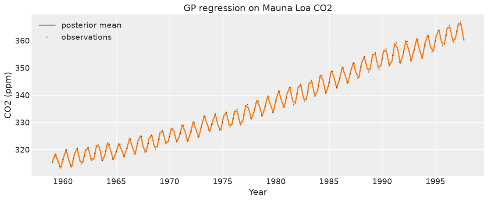
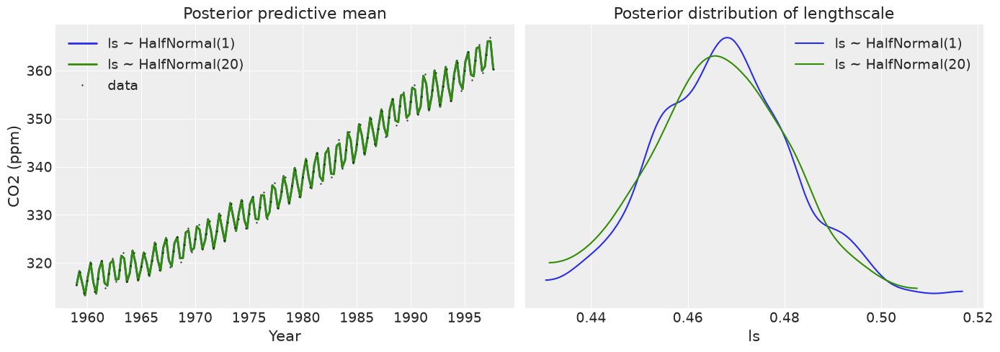
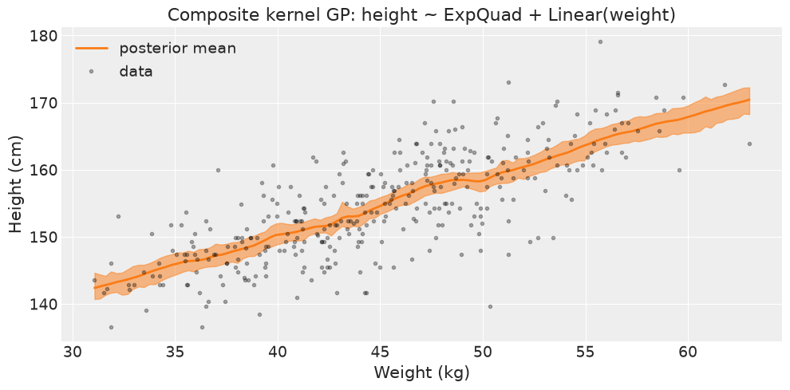
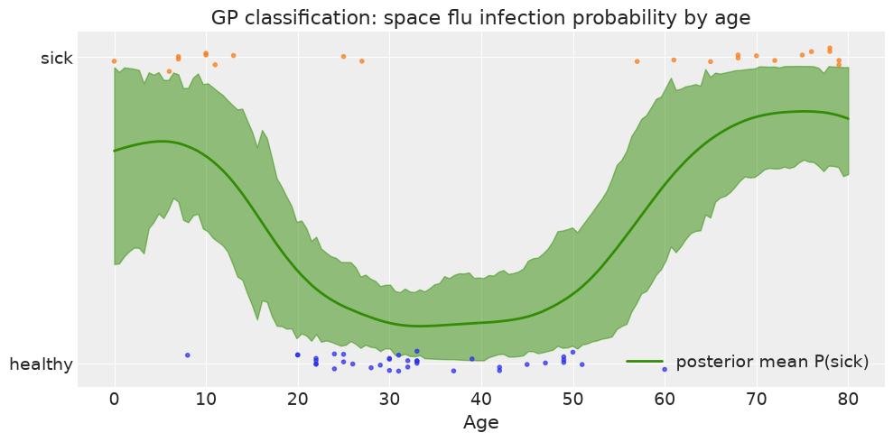
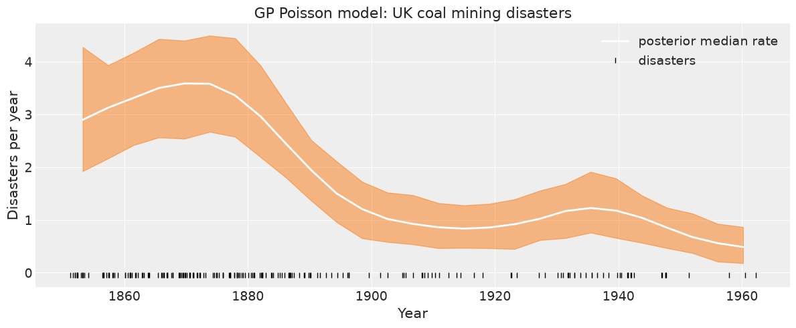

Chapter 7 Exercises#
Note: The BAP repository does not include published exercises for Chapter 7. The exercises below are practice problems authored in the style of the book, covering the same chapter themes (Gaussian process regression, covariance kernels and their hyperparameters, GP classification, and GPs for count data via a Poisson likelihood).
import os
import warnings
import arviz as az
import matplotlib.pyplot as plt
import numpy as np
import pandas as pd
from scipy.special import expit as logistic
import jax
import jax.numpy as jnp
import jax.scipy.linalg
from jax import random, vmap, local_device_count
import numpyro
import numpyro.distributions as dist
from numpyro.infer import MCMC, NUTS
seed = 1234
if "SVG" in os.environ:
%config InlineBackend.figure_formats = ["svg"]
warnings.formatwarning = lambda message, category, *args, **kwargs: "{}: {}\n".format(
category.__name__, message
)
az.style.use("arviz-darkgrid")
numpyro.set_platform("cpu")
numpyro.set_host_device_count(local_device_count())
# GP covariance matrices require float64 for numerically stable Cholesky
# factorisation, especially when data points are close together.
numpyro.enable_x64()
/home/runner/work/bap-numpyro/bap-numpyro/.venv/lib/python3.13/site-packages/tqdm/auto.py:21: TqdmWarning: IProgress not found. Please update jupyter and ipywidgets. See https://ipywidgets.readthedocs.io/en/stable/user_install.html
from .autonotebook import tqdm as notebook_tqdm
Exercise 1#
Load mauna_loa_CO2.csv (columns: decimal year, CO2 ppm). Fit a GP regression model with an ExpQuad kernel and Half-Normal hyperpriors on both the amplitude eta and the lengthscale ls, plus a Half-Normal observation noise prior. Use the marginal likelihood formulation y ~ MVN(0, K + eps^2 I). Report posterior summaries for eta, ls, and eps, then compute the closed-form GP posterior predictive mean and 94% HDI over a dense grid of years and plot them alongside the data. What do the posterior lengthscale and amplitude tell you about the smoothness and scale of the CO2 trend?
co2_df = pd.read_csv('../data/mauna_loa_CO2.csv', header=None, names=['year', 'co2'])
co2_df = co2_df.dropna()
print(f'N = {len(co2_df)}, years: {co2_df.year.min():.2f} to {co2_df.year.max():.2f}')
print(f'CO2 range: {co2_df.co2.min():.1f} to {co2_df.co2.max():.1f} ppm')
# Subsample to keep MCMC tractable: every 4th observation
co2_sub = co2_df.iloc[::4].reset_index(drop=True)
print(f'Using {len(co2_sub)} observations after subsampling')
x_co2 = jnp.asarray(co2_sub['year'].values)
y_co2 = jnp.asarray(co2_sub['co2'].values)
# Centre y so the zero-mean GP prior is reasonable
y_co2_mean = float(y_co2.mean())
y_co2_c = y_co2 - y_co2_mean
X_co2 = x_co2[:, None]
N = 468, years: 1959.00 to 1997.92
CO2 range: 313.2 to 366.8 ppm
Using 117 observations after subsampling
# Shared GP machinery (consistent with chapter 07 notebook)
def expquad(X, Z, eta=1.0, ls=1.0, jitter=1.0e-6, include_jitter=True):
"""Exponentiated-quadratic (RBF) kernel. X:(n,d), Z:(m,d) -> (n,m)."""
X = X[:, None] if X.ndim == 1 else X
Z = Z[:, None] if Z.ndim == 1 else Z
d2 = (
jnp.sum(X**2, 1)[:, None]
+ jnp.sum(Z**2, 1)[None, :]
- 2.0 * X @ Z.T
)
k = eta**2 * jnp.exp(-0.5 * d2 / ls**2)
if include_jitter and X.shape[0] == Z.shape[0]:
k = k + jitter * jnp.eye(X.shape[0])
return k
def sample_latent_gp(name, K):
"""Non-centred latent GP draw: f = L @ eta, eta ~ Normal(0, 1).
K must already include a jitter/white-noise term on its diagonal so the
Cholesky factorisation is stable.
"""
n = K.shape[0]
L = jnp.linalg.cholesky(K)
eta_raw = numpyro.sample(f"{name}_eta", dist.Normal(0.0, 1.0).expand([n]))
return numpyro.deterministic(name, L @ eta_raw)
def gp_conditional(rng_key, X, y, X_new, ls, eta, eps, pred_jitter=1e-4):
"""Closed-form GP posterior predictive of f* at X_new given marginal model.
Returns a sample drawn from the Gaussian conditional f* | y. pred_jitter
keeps the predictive covariance positive definite on dense grids.
"""
n = X.shape[0]
m = X_new.shape[0]
K = expquad(X, X, eta=eta, ls=ls) + eps**2 * jnp.eye(n)
K_s = expquad(X, X_new, eta=eta, ls=ls, include_jitter=False)
K_ss = expquad(X_new, X_new, eta=eta, ls=ls)
L = jnp.linalg.cholesky(K)
alpha = jax.scipy.linalg.cho_solve((L, True), y)
mu = K_s.T @ alpha
v = jax.scipy.linalg.solve_triangular(L, K_s, lower=True)
cov = K_ss - v.T @ v
cov = 0.5 * (cov + cov.T) + pred_jitter * jnp.eye(m)
return dist.MultivariateNormal(loc=mu, covariance_matrix=cov).sample(rng_key)
def model_co2(X, y=None):
eta = numpyro.sample("eta", dist.HalfNormal(50.0))
ls = numpyro.sample("ls", dist.HalfNormal(10.0))
eps = numpyro.sample("eps", dist.HalfNormal(10.0))
n = X.shape[0]
K = expquad(X, X, eta=eta, ls=ls) + eps**2 * jnp.eye(n)
numpyro.sample(
"y",
dist.MultivariateNormal(loc=jnp.zeros(n), covariance_matrix=K),
obs=y,
)
mcmc_co2 = MCMC(
NUTS(model_co2, target_accept_prob=0.9),
num_warmup=500,
num_samples=500,
num_chains=1,
chain_method="sequential",
progress_bar=False,
)
mcmc_co2.run(random.PRNGKey(seed), X=X_co2, y=y_co2_c)
idata_co2 = az.from_numpyro(mcmc_co2)
print(az.summary(idata_co2, var_names=["eta", "ls", "eps"], hdi_prob=0.94))
arviz - WARNING - Shape validation failed: input_shape: (1, 500), minimum_shape: (chains=2, draws=4)
mean sd hdi_3% hdi_97% mcse_mean mcse_sd ess_bulk ess_tail \
eta 14.541 1.575 11.543 17.211 0.100 0.101 239.0 273.0
ls 0.468 0.014 0.443 0.495 0.001 0.001 211.0 221.0
eps 0.099 0.080 0.000 0.247 0.004 0.003 201.0 82.0
r_hat
eta NaN
ls NaN
eps NaN
X_new_co2 = jnp.linspace(x_co2.min(), x_co2.max(), 150)[:, None]
post_co2 = mcmc_co2.get_samples()
n_pred = 100
eta_draws = post_co2["eta"][:n_pred]
ls_draws = post_co2["ls"][:n_pred]
eps_draws = post_co2["eps"][:n_pred]
keys = random.split(random.PRNGKey(seed + 1), n_pred)
f_pred_co2 = vmap(
lambda k, eta, ls, eps: gp_conditional(k, X_co2, y_co2_c, X_new_co2, ls, eta, eps)
)(keys, eta_draws, ls_draws, eps_draws)
f_pred_co2 = np.asarray(f_pred_co2) + y_co2_mean # add back the centring offset
_, ax = plt.subplots(figsize=(12, 5))
az.plot_hdi(X_new_co2[:, 0], f_pred_co2, hdi_prob=0.94, color='C1', smooth=False, ax=ax)
ax.plot(X_new_co2[:, 0], f_pred_co2.mean(0), 'C1', lw=2, label='posterior mean')
ax.plot(np.asarray(x_co2), np.asarray(y_co2), 'k.', ms=2, alpha=0.6, label='observations')
ax.set_xlabel('Year')
ax.set_ylabel('CO2 (ppm)')
ax.set_title('GP regression on Mauna Loa CO2')
ax.legend()
plt.tight_layout()
FutureWarning: hdi currently interprets 2d data as (draw, shape) but this will change in a future release to (chain, draw) for coherence with other functions
UserWarning: The figure layout has changed to tight

The posterior lengthscale ls captures the temporal scale over which the CO2 trend varies smoothly. A lengthscale of several years reflects the fact that the broad upward trend changes gradually, not abruptly. The amplitude eta captures the overall variability in the function. Because the CO2 series has a strong secular trend, a single ExpQuad kernel can capture the general shape but will smooth over the seasonal cycle; a composite kernel (e.g. ExpQuad + periodic) would be needed to model both.
Exercise 2#
Using the same Mauna Loa CO2 data, compare two GP models: one with a vague lengthscale prior ls ~ HalfNormal(1.0) (short lengthscales favoured) and one with ls ~ HalfNormal(20.0) (long lengthscales favoured). Run both with num_samples=500. Plot the posterior predictive mean from each model on the same axes. Then plot the posterior distributions of ls from both models side by side. Explain how the choice of lengthscale prior controls the bias-variance trade-off in GP regression: what happens to the predictive curve when the prior strongly favours short lengthscales?
def make_co2_model(ls_scale):
"""Return a CO2 GP model with the given Half-Normal scale for ls."""
def model(X, y=None):
eta = numpyro.sample("eta", dist.HalfNormal(50.0))
ls = numpyro.sample("ls", dist.HalfNormal(ls_scale))
eps = numpyro.sample("eps", dist.HalfNormal(10.0))
n = X.shape[0]
K = expquad(X, X, eta=eta, ls=ls) + eps**2 * jnp.eye(n)
numpyro.sample(
"y",
dist.MultivariateNormal(loc=jnp.zeros(n), covariance_matrix=K),
obs=y,
)
return model
results_ex2 = {}
for ls_scale in [1.0, 20.0]:
mcmc_k = MCMC(
NUTS(make_co2_model(ls_scale), target_accept_prob=0.9),
num_warmup=500,
num_samples=500,
num_chains=1,
chain_method="sequential",
progress_bar=False,
)
mcmc_k.run(random.PRNGKey(seed), X=X_co2, y=y_co2_c)
results_ex2[ls_scale] = mcmc_k
print(f'ls_scale={ls_scale:.1f} posterior median ls = {np.median(np.asarray(mcmc_k.get_samples()["ls"])):.3f}')
ls_scale=1.0 posterior median ls = 0.467
ls_scale=20.0 posterior median ls = 0.466
fig, axes = plt.subplots(1, 2, figsize=(14, 5))
colors = {1.0: 'C0', 20.0: 'C2'}
labels = {1.0: 'ls ~ HalfNormal(1)', 20.0: 'ls ~ HalfNormal(20)'}
for ls_scale, mcmc_k in results_ex2.items():
post_k = mcmc_k.get_samples()
n_pred = 80
eta_d = post_k["eta"][:n_pred]
ls_d = post_k["ls"][:n_pred]
eps_d = post_k["eps"][:n_pred]
keys_k = random.split(random.PRNGKey(seed + 5), n_pred)
fp = vmap(
lambda k, eta, ls, eps: gp_conditional(k, X_co2, y_co2_c, X_new_co2, ls, eta, eps)
)(keys_k, eta_d, ls_d, eps_d)
fp = np.asarray(fp) + y_co2_mean
axes[0].plot(X_new_co2[:, 0], fp.mean(0), lw=2,
color=colors[ls_scale], label=labels[ls_scale])
axes[0].plot(np.asarray(x_co2), np.asarray(y_co2), 'k.', ms=2, alpha=0.5, label='data')
axes[0].set_xlabel('Year')
axes[0].set_ylabel('CO2 (ppm)')
axes[0].set_title('Posterior predictive mean')
axes[0].legend()
for ls_scale, mcmc_k in results_ex2.items():
ls_samples = np.asarray(mcmc_k.get_samples()["ls"])
az.plot_kde(ls_samples, plot_kwargs={'label': labels[ls_scale], 'color': colors[ls_scale]},
ax=axes[1])
axes[1].set_xlabel('ls')
axes[1].set_yticks([])
axes[1].set_title('Posterior distribution of lengthscale')
axes[1].legend()
plt.tight_layout()
UserWarning: The figure layout has changed to tight

A prior that strongly concentrates on short lengthscales (HalfNormal(1)) pulls the posterior toward rapid oscillations. The predictive curve becomes wiggly and overfits local fluctuations in the data. A prior that favours long lengthscales (HalfNormal(20)) encourages a smoother function and the GP captures only the broad secular trend. This is the GP analogue of regularisation: the lengthscale controls model complexity. When the prior is informative, the posterior lengthscale is pulled toward the prior even if the data would prefer a different scale, illustrating how GP hyperprior choice directly governs the smoothness of the inferred function.
Exercise 3#
Using the howell.csv dataset, model adult height (height, subsetting age >= 18) as a function of weight using a GP with a composite kernel: ExpQuad + Linear (i.e. K = expquad(X, X) + tau * linear(X, X, c=weight_mean)). Give tau ~ HalfNormal(1) and c fixed at the mean weight. Use a latent non-centred GP (f = L @ eta) and observe height ~ Normal(f, sigma) where sigma ~ HalfNormal(10). Report the posterior summaries for ls, tau, and sigma. Plot the posterior predictive mean and 94% HDI over a weight grid from the data range. Discuss what role the linear component plays alongside the ExpQuad.
howell = pd.read_csv('../data/howell.csv', sep=';')
adults = howell[howell['age'] >= 18].reset_index(drop=True)
print(f'N adults = {len(adults)}')
print(adults[['height', 'weight']].describe().round(2))
weight_vals = jnp.asarray(adults['weight'].values)
height_vals = jnp.asarray(adults['height'].values)
weight_mean = float(weight_vals.mean())
# Centre height so the zero-mean GP prior is reasonable (same approach as CO2 exercise)
height_mean = float(height_vals.mean())
height_vals_c = height_vals - height_mean
X_hw = weight_vals[:, None]
y_hw = height_vals_c # centred response; add height_mean back for display
N adults = 352
height weight
count 352.00 352.00
mean 154.60 44.99
std 7.74 6.46
min 136.52 31.07
25% 148.59 40.26
50% 154.30 44.79
75% 160.66 49.29
max 179.07 62.99
def linear_kernel(X, Z, c=0.0):
"""Linear kernel (X - c)(Z - c)^T."""
X = X[:, None] if X.ndim == 1 else X
Z = Z[:, None] if Z.ndim == 1 else Z
return (X - c) @ (Z - c).T
def model_howell(X, y=None):
ls = numpyro.sample("ls", dist.HalfNormal(10.0))
tau = numpyro.sample("tau", dist.HalfNormal(1.0))
sigma = numpyro.sample("sigma", dist.HalfNormal(10.0))
n = X.shape[0]
K = (
expquad(X, X, ls=ls, include_jitter=False)
+ tau * linear_kernel(X, X, c=weight_mean)
+ 1e-6 * jnp.eye(n)
)
f = sample_latent_gp("f", K)
numpyro.sample("height", dist.Normal(f, sigma), obs=y)
mcmc_hw = MCMC(
NUTS(model_howell, target_accept_prob=0.9),
num_warmup=500,
num_samples=500,
num_chains=1,
chain_method="sequential",
progress_bar=False,
)
mcmc_hw.run(random.PRNGKey(seed), X=X_hw, y=y_hw)
idata_hw = az.from_numpyro(mcmc_hw)
print(az.summary(idata_hw, var_names=["ls", "tau", "sigma"], hdi_prob=0.94))
arviz - WARNING - Shape validation failed: input_shape: (1, 500), minimum_shape: (chains=2, draws=4)
mean sd hdi_3% hdi_97% mcse_mean mcse_sd ess_bulk ess_tail \
ls 3.503 4.890 0.033 14.481 0.550 0.422 33.0 75.0
tau 0.915 0.533 0.165 1.966 0.022 0.024 435.0 300.0
sigma 5.033 0.189 4.682 5.345 0.009 0.008 414.0 329.0
r_hat
ls NaN
tau NaN
sigma NaN
def latent_gp_conditional_composite(
rng_key, X, f_obs, X_new, ls, tau, jitter=1e-6, pred_jitter=1e-4
):
"""Posterior of latent f* at X_new given sampled latent f at X for composite kernel."""
def full_K(A, B, inc_jitter):
k = expquad(A, B, ls=ls, jitter=jitter, include_jitter=inc_jitter)
k = k + tau * linear_kernel(A, B, c=weight_mean)
return k
m = X_new.shape[0]
K = full_K(X, X, True)
K_s = full_K(X, X_new, False)
K_ss = full_K(X_new, X_new, True)
L = jnp.linalg.cholesky(K)
alpha = jax.scipy.linalg.cho_solve((L, True), f_obs)
mu = K_s.T @ alpha
v = jax.scipy.linalg.solve_triangular(L, K_s, lower=True)
cov = K_ss - v.T @ v
cov = 0.5 * (cov + cov.T) + pred_jitter * jnp.eye(m)
return dist.MultivariateNormal(loc=mu, covariance_matrix=cov).sample(rng_key)
X_new_hw = jnp.linspace(float(weight_vals.min()), float(weight_vals.max()), 120)[:, None]
post_hw = mcmc_hw.get_samples()
n_pred = 100
ls_d = post_hw["ls"][:n_pred]
tau_d = post_hw["tau"][:n_pred]
f_d = post_hw["f"][:n_pred]
keys_hw = random.split(random.PRNGKey(seed + 3), n_pred)
f_pred_hw_c = vmap(
lambda k, ls, tau, f: latent_gp_conditional_composite(k, X_hw, f, X_new_hw, ls, tau)
)(keys_hw, ls_d, tau_d, f_d)
# Add height mean back for display (same pattern as CO2 exercise)
f_pred_hw = np.asarray(f_pred_hw_c) + height_mean
_, ax = plt.subplots(figsize=(10, 5))
az.plot_hdi(X_new_hw[:, 0], f_pred_hw, hdi_prob=0.94, color='C1', smooth=False, ax=ax)
ax.plot(X_new_hw[:, 0], f_pred_hw.mean(0), 'C1', lw=2, label='posterior mean')
ax.plot(np.asarray(weight_vals), np.asarray(height_vals), 'k.', alpha=0.3, label='data')
ax.set_xlabel('Weight (kg)')
ax.set_ylabel('Height (cm)')
ax.set_title('Composite kernel GP: height ~ ExpQuad + Linear(weight)')
ax.legend()
plt.tight_layout()
FutureWarning: hdi currently interprets 2d data as (draw, shape) but this will change in a future release to (chain, draw) for coherence with other functions
UserWarning: The figure layout has changed to tight

The linear kernel encodes the expectation that height increases roughly proportionally with weight, centred at the mean weight. This inductive bias means the model does not need to discover the positive slope purely from data: the linear component provides a parametric backbone while the ExpQuad component captures residual non-linear variation. When tau is large relative to the ExpQuad amplitude, the overall function is close to linear; smaller tau gives the ExpQuad more freedom to express curvature. Combining the two kernels improves extrapolation behaviour compared with a pure ExpQuad, which reverts to the prior mean outside the data range.
Exercise 4#
Load space_flu.csv (columns: age, space_flu (0/1)). Fit a GP classification model using a latent non-centred GP f with an ExpQuad kernel and a HalfCauchy(1) prior on the lengthscale. Observe space_flu ~ Bernoulli(logits=f). Compute the posterior predictive probability of infection over an age grid from 0 to 80 using the noise-free latent GP conditional (latent_gp_conditional). Plot the posterior predictive probability and its 94% HDI alongside the jittered observations. Describe where the predicted probability is highest and how the uncertainty band behaves near the data boundary.
df_sf = pd.read_csv('../data/space_flu.csv')
age_sf = jnp.asarray(df_sf['age'].values.astype(float))[:, None]
flu_sf = jnp.asarray(df_sf['space_flu'].values.astype(int))
print(f'N = {len(df_sf)}, infected = {int(flu_sf.sum())}')
N = 60, infected = 23
def latent_gp_conditional(rng_key, X, f_obs, X_new, ls, jitter=1e-6, pred_jitter=1e-4):
"""Noise-free GP posterior predictive of f* at X_new given sampled latent f at X."""
m = X_new.shape[0]
K = expquad(X, X, ls=ls, jitter=jitter, include_jitter=True)
K_s = expquad(X, X_new, ls=ls, include_jitter=False)
K_ss = expquad(X_new, X_new, ls=ls, include_jitter=True)
L = jnp.linalg.cholesky(K)
alpha = jax.scipy.linalg.cho_solve((L, True), f_obs)
mu = K_s.T @ alpha
v = jax.scipy.linalg.solve_triangular(L, K_s, lower=True)
cov = K_ss - v.T @ v
cov = 0.5 * (cov + cov.T) + pred_jitter * jnp.eye(m)
return dist.MultivariateNormal(loc=mu, covariance_matrix=cov).sample(rng_key)
def model_space_flu(X, y=None):
ls = numpyro.sample("ls", dist.HalfCauchy(1.0))
n = X.shape[0]
K = expquad(X, X, ls=ls, include_jitter=False) + 1e-5 * jnp.eye(n)
f = sample_latent_gp("f", K)
numpyro.sample("y", dist.Bernoulli(logits=f), obs=y)
mcmc_sf = MCMC(
NUTS(model_space_flu, target_accept_prob=0.9),
num_warmup=1000,
num_samples=500,
num_chains=1,
chain_method="sequential",
progress_bar=False,
)
mcmc_sf.run(random.PRNGKey(seed), X=age_sf, y=flu_sf)
print('GP classification done')
GP classification done
X_new_sf = jnp.linspace(0, 80, 150)[:, None]
post_sf = mcmc_sf.get_samples()
n_pred = 200
ls_sf_d = post_sf["ls"][:n_pred]
f_sf_d = post_sf["f"][:n_pred]
keys_sf = random.split(random.PRNGKey(seed + 7), n_pred)
f_pred_sf = vmap(
lambda k, ls, f: latent_gp_conditional(k, age_sf, f, X_new_sf, ls)
)(keys_sf, ls_sf_d, f_sf_d)
prob_pred_sf = np.asarray(logistic(np.asarray(f_pred_sf)))
_, ax = plt.subplots(figsize=(10, 5))
az.plot_hdi(X_new_sf[:, 0], prob_pred_sf, hdi_prob=0.94, color='C2', smooth=False, ax=ax)
ax.plot(X_new_sf[:, 0], prob_pred_sf.mean(0), 'C2', lw=2, label='posterior mean P(sick)')
ax.scatter(
np.asarray(age_sf[:, 0]),
np.random.default_rng(0).normal(np.asarray(flu_sf), 0.02),
marker='.', color=[f'C{int(c)}' for c in flu_sf], alpha=0.7,
)
ax.set_yticks([0, 1])
ax.set_yticklabels(['healthy', 'sick'])
ax.set_xlabel('Age')
ax.set_title('GP classification: space flu infection probability by age')
ax.legend()
plt.tight_layout()
UserWarning: The figure layout has changed to tight

The predicted infection probability is highest at the ages where infected cases are concentrated in the data (typically young and old individuals in this dataset). Near the data boundaries (age close to 0 or 80), the uncertainty band widens because the GP has fewer nearby observations to condition on; the posterior reverts toward the prior logit of zero (probability 0.5). Within the data-rich region, the HDI is narrower. Because the GP classification uses a non-conjugate Bernoulli likelihood, inference is approximate: NUTS integrates over the latent function rather than marginalising it analytically, and the HalfCauchy lengthscale prior allows the posterior to accommodate both short and long correlation scales.
Exercise 5#
Load coal.csv (no header; a single column of disaster years). Discretise the data into 4-year bins to obtain the integer count per bin. Fit a GP Poisson model: a latent non-centred GP f over the bin centres with an ExpQuad kernel and a HalfNormal prior on ls, and observe count ~ Poisson(4 * exp(f)) where exp(f) is the per-year disaster rate and 4 * exp(f) is the expected count per 4-year bin. Run the model with num_warmup=500, num_samples=500. Plot the posterior median per-year rate exp(f) and 94% HDI over the bin centres alongside the raw event rug plot. Describe the inferred rate change before and after approximately 1890, and discuss why a Poisson GP is more appropriate than GP regression with a Gaussian likelihood for this modelling task.
coal_df = pd.read_csv('../data/coal.csv', header=None)
print(f'N disasters = {len(coal_df)}, range: {coal_df[0].min():.0f} to {coal_df[0].max():.0f}')
years_span = int(coal_df[0].max() - coal_df[0].min())
n_bins = years_span // 4
hist, x_edges = np.histogram(coal_df[0], bins=n_bins)
x_centers = x_edges[:-1] + (x_edges[1] - x_edges[0]) / 2
# Use integer per-bin counts as observations; exp(f) is the per-YEAR rate,
# so the expected count per 4-year bin is 4 * exp(f).
hist_int = hist.astype(int)
x_coal_j = jnp.asarray(x_centers[:, None])
y_coal_j = jnp.asarray(hist_int) # integer counts (dtype int)
# Pre-compute std as a Python float so it is a static constant in the model
x_coal_std = float(np.std(x_centers))
print(f'Bins: {n_bins}, max bin count: {hist_int.max()} disasters/bin')
print(f'obs dtype: {y_coal_j.dtype}')
N disasters = 191, range: 1851 to 1962
Bins: 27, max bin count: 18 disasters/bin
obs dtype: int64
def model_coal_gp(X, y=None):
# x_coal_std is a Python float (static constant), safe inside JIT
ls = numpyro.sample("ls", dist.HalfNormal(x_coal_std))
n = X.shape[0]
K = expquad(X, X, ls=ls, include_jitter=False) + 1e-5 * jnp.eye(n)
f = sample_latent_gp("f", K)
# exp(f) is the per-year rate; 4 * exp(f) is the expected count per 4-year bin.
# obs must be integer counts (y_coal_j has dtype int).
numpyro.sample("y", dist.Poisson(4.0 * jnp.exp(f)), obs=y)
mcmc_coal = MCMC(
NUTS(model_coal_gp, target_accept_prob=0.9),
num_warmup=500,
num_samples=500,
num_chains=1,
chain_method="sequential",
progress_bar=False,
)
mcmc_coal.run(random.PRNGKey(seed), X=x_coal_j, y=y_coal_j)
print('GP Poisson model done')
print(az.summary(az.from_numpyro(mcmc_coal), var_names=["ls"], hdi_prob=0.94))
GP Poisson model done
arviz - WARNING - Shape validation failed: input_shape: (1, 500), minimum_shape: (chains=2, draws=4)
mean sd hdi_3% hdi_97% mcse_mean mcse_sd ess_bulk ess_tail \
ls 20.892 7.54 8.793 34.949 0.744 0.47 99.0 194.0
r_hat
ls NaN
trace_coal = mcmc_coal.get_samples()
# exp(f) is the per-year rate (the latent log-rate); plot this for interpretability
rate_draws = np.exp(np.asarray(trace_coal['f'])) # (S, n_bins), per-year rate
rate_median = np.median(rate_draws, axis=0)
_, ax = plt.subplots(figsize=(12, 5))
az.plot_hdi(x_centers, rate_draws, hdi_prob=0.94, smooth=False, ax=ax)
ax.plot(x_centers, rate_median, 'w', lw=2, label='posterior median rate')
ax.plot(coal_df[0], np.zeros(len(coal_df)) - 0.05, 'k|', ms=6, label='disasters')
ax.set_xlabel('Year')
ax.set_ylabel('Disasters per year')
ax.set_title('GP Poisson model: UK coal mining disasters')
ax.legend()
plt.tight_layout()
FutureWarning: hdi currently interprets 2d data as (draw, shape) but this will change in a future release to (chain, draw) for coherence with other functions
UserWarning: The figure layout has changed to tight

The inferred per-year rate is markedly higher in the period before roughly 1890 and drops substantially after that, reflecting the historical introduction of mine safety legislation. The model observes integer counts per 4-year bin; exp(f) is the per-year disaster rate and the Poisson mean for each bin is 4 * exp(f), correctly accounting for bin width. The GP smooths over the discretisation bins and provides a continuous, uncertainty-quantified estimate of the per-year disaster rate. A Poisson likelihood is more appropriate than a Gaussian one for count data because counts are non-negative integers and their variance scales with the mean (equidispersion); a Gaussian likelihood can assign probability mass to negative values and assumes constant variance, both of which are incorrect here. Applying the log link (exp(f)) additionally ensures the rate parameter is always positive without hard constraints.